This is to certify that Abhinandan Upadhyay (UID: 26MCA20229), a student of the Master of Computer Applications (MCA) programme, has successfully completed the project entitled “CodeLock: A Study-Focused Desktop Kiosk for Exam Preparation and DSA Practice” under my supervision and guidance.
The work presented in this report is submitted in partial fulfilment of the academic requirements of the MCA programme. To the best of my knowledge, the project work described herein is an authentic record of the student’s work. The report distinguishes the paths that were verified offline from the privileged Windows operations that were intentionally not performed in the development environment.
Date: ____________________
Place: Chandigarh University, Mohali, Punjab
I express my sincere gratitude to my project guide, Mr. Randeep Singh Dhillon, for his guidance, feedback and encouragement throughout the development of CodeLock. His suggestions during planning, implementation and documentation helped me separate the parts of the project that could be verified offline from the privileged operating-system operations that required a controlled test machine.
I am thankful to the faculty members of the University Institute of Computing, Chandigarh University, for providing the academic environment and learning resources required to complete this project. I also acknowledge the support of my classmates and friends who reviewed the application and identified areas for improvement, particularly around the two-mode navigation and the visibility of the exam workspace.
I would like to thank my family for their continuous encouragement and support. Finally, I acknowledge the developers and maintainers of Python, Tkinter, pypdf, psutil, python-oracledb, SQLite and PowerShell, whose documentation and open tools supported this work.
Abhinandan Upadhyay · UID 26MCA20229
Master of Computer Applications
Date: November 2026
CodeLock is a Python and Tkinter desktop application that turns a student’s own computer into a short, self-imposed focus session. It addresses two problems that often appear together in self-study: distracting websites and applications break concentration, and examination preparation frequently becomes passive reading without measurable feedback. After signing in, the student chooses between two modes. Exam Preparation opens a workspace in which a syllabus document is imported, its topic tree is reviewed and approved, study notes and a validated question bank are produced, and practice, mock examinations, results and topic-level analytics are available without locking the computer. DSA Practice selects the Engineering coding track and locks the PC: a verified PowerShell helper writes a marked block into the hosts file, a watchdog terminates a small set of blacklisted desktop processes, and only a solution that passes visible and hidden tests, followed by explicit student confirmation, releases a fifteen-minute reward.
A submission runs in a separate Python interpreter under a trusted-parent protocol. The child process never receives expected answers, hidden cases or a verdict field; the parent reconstructs the returned value and performs the comparison itself. Accounts, attempts, exam workspaces, question banks and exam sessions are stored in SQLite by default or in Oracle through a PL/SQL package. The final offline suite passes 227 checks with system Python and 228 through the project virtual environment, the Analytics GUI smoke test passes 13 of 13 checks, and a dedicated mode-chooser flow harness passes 23 of 23 checks. Real UAC approval, helper installation and writes to the system hosts file were deliberately not performed in the development environment; those paths are represented by dry-run behaviour, temporary-file tests and simulated backends, and the report keeps that boundary visible.
Keywords: digital self-control, kiosk application, Python, Tkinter, coding judge, exam preparation, SQLite, Oracle, hosts file, responsible use.
The report uses two kinds of image: diagrams drawn specifically for this document, and screenshots captured from the submitted CodeLock build. Each figure is numbered by the section in which it first appears.
| Figure | Title | Type | Page |
|---|---|---|---|
| 2.1 | DSA Practice with the desktop locked and the judge console active | Screenshot | 8 |
| 2.2 | Fifteen-minute reward countdown after a passing submission | Screenshot | 8 |
| 4.1 | Three-layer architecture of the CodeLock application | Diagram | 10 |
| 4.2 | Mode selection and the DSA lock, judge and reward workflow | Diagram | 11 |
| 6.1 | Student sign-in dialog with the active storage backend | Screenshot | 14 |
| 6.2 | Two-button mode chooser shown after sign-in | Screenshot | 14 |
| 6.3 | Exam Preparation workspace with the syllabus tab | Screenshot | 15 |
| 6.4 | Editable question bank generated from an approved syllabus | Screenshot | 16 |
| 6.5 | Topic-wise practice session with immediate feedback | Screenshot | 16 |
| 6.6 | Mock examination result with a per-topic breakdown | Screenshot | 17 |
| 6.7 | Analytics dashboard with mastery and recommendations | Screenshot | 17 |
| 7.1 | Relational data model used by SQLite and Oracle | Diagram | 19 |
| 13.1 | Final offline verification summary | Screenshot | 25 |
Project title: CodeLock: A Study-Focused Desktop Kiosk for Exam Preparation and DSA Practice. CodeLock is a local Python/Tkinter desktop application that combines two capabilities usually kept separate: a focus mode that applies an operating-system-level website block and terminates distracting desktop applications during a coding challenge, and an examination-preparation workspace that turns an imported syllabus into source-grounded notes, questions, scored practice and topic-level analytics.
The focus loop is deliberately short: solve one DSA challenge, confirm the unlock after a passing submission, receive fifteen minutes of unrestricted use, then meet the next challenge. Exam Preparation applies no lock; its purpose is measurable preparation, not restriction.
| Item | Details |
|---|---|
| Project category | Desktop commitment device and study workspace |
| Language / runtime | Python 3.10+ (developed on Python 3.14.7) |
| GUI | Tkinter / ttk kiosk window with a built-in code editor |
| Focus controls | Windows hosts file through a separately installed PowerShell helper; process watchdog |
| Coding judge | Trusted-parent subprocess protocol with generated hidden tests |
| Exam documents | PDF through pypdf; DOCX through the standard library; plain text |
| Study generation | Configurable Ollama, Gemini or OpenAI-compatible endpoint; no stored keys |
| Accounts / storage | SQLite by default; Oracle 19c+ with a PL/SQL package when configured |
| Verification | Offline self-test, Tk GUI smoke test and mode-chooser flow harness |
| Contributor | Abhinandan Upadhyay (26MCA20229) |
| Project guide | Mr. Randeep Singh Dhillon |
In scope: accounts and sign-in, the two-mode chooser, an Engineering DSA session (warm-up plus five challenges), hidden-test grading, reward and auto-relock, website and process enforcement, syllabus import and approval, notes and questions, practice and mock sessions, results, analytics, SQLite/Oracle persistence and recovery. Out of scope: mobile-device control, a secure code sandbox, live proctoring, OCR, manual marking, password recovery and a hosted multi-user service.
At the time of writing, no public GitHub repository has been configured for CodeLock. This report therefore does not present a repository URL. The complete source folder, documentation and a verified backup snapshot are submitted together; Section 13 records the file inventory and backup result. A link that does not resolve would be weaker evidence than a clear statement of what was submitted.
Sections 2 and 3 cover the problem, objectives and methodology. Sections 4 and 5 describe the architecture and each module; Section 6 presents interface evidence and Section 7 the data design. Sections 8 to 11 contain comparisons, gaps, evaluation and limitations, and Sections 12 and 13 provide references, appendices and the source-inventory proof.
CodeLock demonstrates how a small, locally installed application can combine a credible focus contract with an evidence-producing study workspace. The focus contract is concrete: the hosts file contains a marked block for nine distracting domains, a watchdog terminates seven blacklisted desktop applications every 2.5 seconds, and the unlock is conditional on a coding submission that passes all hidden tests and a separate confirmation dialog. The study workspace is equally concrete: an uploaded syllabus becomes an editable topic tree, the approved tree gates generated notes and questions, and practice and mock sessions produce scores, per-topic accuracy and mastery indicators.
The application runs as a standard user: it does not install the elevated helper, keep an elevated process alive or invent study content when no AI provider is available. Privileged operations are single, visible approvals and storage is scoped to the signed-in student.
Study time on a personal computer is interrupted by low-friction escapes, while enterprise device management is too heavy for a student who simply wants a focused hour. Examination preparation fails differently: generated notes and questions appear quickly, but without a syllabus, a source reference and a scoring record the student cannot tell whether the material matches the course or whether understanding improved. CodeLock treats both as one design problem: a short commitment contract creates the session and a measurable workspace gives it a purpose.
MCA and engineering students preparing for examinations and coding interviews on their own Windows computers; instructors demonstrating a local-first application with a real test suite; and reviewers interested in the safety engineering around a privileged helper and untrusted submissions.
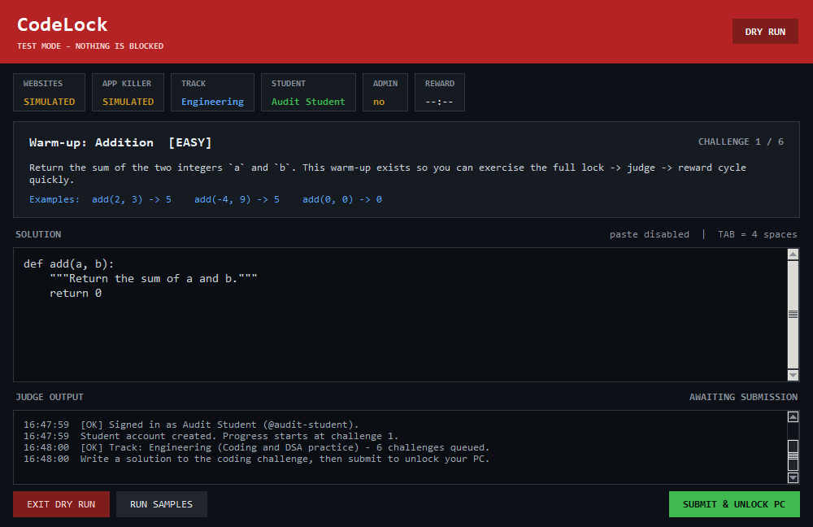
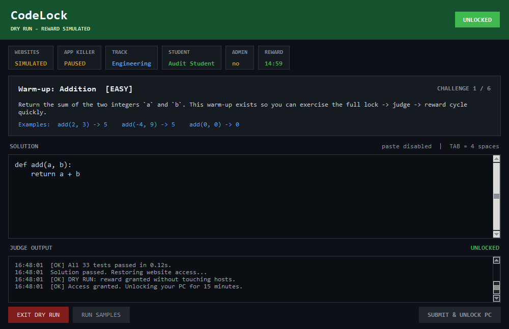
The case study is the development and local operation of CodeLock on a Windows 10 machine with a 1366×768 display, Python 3.14.7, Tk 8.6 and PowerShell 5.1. The submitted folder contains main.py, 19 Python modules under codelock/, a fixed elevated helper, an installer, an Oracle schema and migrations: approximately 16,570 lines across Python, PowerShell and SQL. The application starts as a standard user, opens a sign-in dialog and then the mode chooser; no host or process change occurs before DSA Practice is selected. A final navigation change replaced the original four-track picker with the two-button chooser described here.
The application requires Python 3.10 or later with Tkinter. From the project folder, create a virtual environment, install the requirements, run the offline self-test, and then launch in dry-run mode before using enforcement.
| Step | Command | Purpose |
|---|---|---|
| 1 | python -m venv .venv | Create the isolated environment |
| 2 | pip install -r requirements.txt | Install pypdf, psutil and the optional Oracle driver |
| 3 | python main.py --self-test | Run the offline verification suite |
| 4 | python main.py --dry-run | Open the GUI with enforcement simulated |
The elevated helper is installed separately by an administrator; the GUI never installs or elevates itself. Without it, CodeLock still starts and grades challenges, but the HOSTS FILE badge reports the observed state and explains why blocking is unavailable.
This report uses the submitted source, README and audit records plus current-build screenshots. It reports the offline suite (227 checks with system Python, 228 in the virtual environment), the Tk smoke test (13/13) and the mode flow harness (23/23). Real UAC approval, helper installation, hosts writes, Oracle execution and live AI generation were not performed; Sections 9 and 11 keep that visible.
CodeLock is intended for a student’s own computer, with the student’s knowledge. It is a commitment device, not a monitoring tool: it collects no screenshots, keystrokes or browsing history, and use by another person would require informed consent.
CodeLock is a layered desktop application. The Tkinter presentation layer owns the window, the editor, the judge console and the exam tabs. Application services implement grading, the problem bank, the exam engine, study generation and the student store. A narrow privilege boundary separates the standard-user application from the installed hosts helper, while the process watchdog runs inside the application and terminates blacklisted desktop programs. SQLite is the default store; Oracle is an optional shared backend.
| Layer | Components | Responsibility |
|---|---|---|
| Presentation | main.py; codelock/gui.py; exam_ui.py; exam_runner.py | Kiosk window, sign-in, mode chooser, editor, exam tabs |
| Application | judge.py; problems.py; exam_engine.py; study_generation.py | Grading, challenge bank, scoring, notes and questions |
| Data services | db.py; exam_analytics.py; exam_charts.py | Accounts, progress, sessions, analytics, charts |
| Privilege boundary | hosts_elevation.py; windows_acl.py; hosts_helper.ps1 | Manifest and ACL verification; one-shot UAC helper |
| Operating system | Windows hosts file; ProcessKiller | Website block and desktop-process enforcement |
| Persistence | SQLite (default); Oracle 19c+ (optional) | Student, progress, exam workspace and session records |
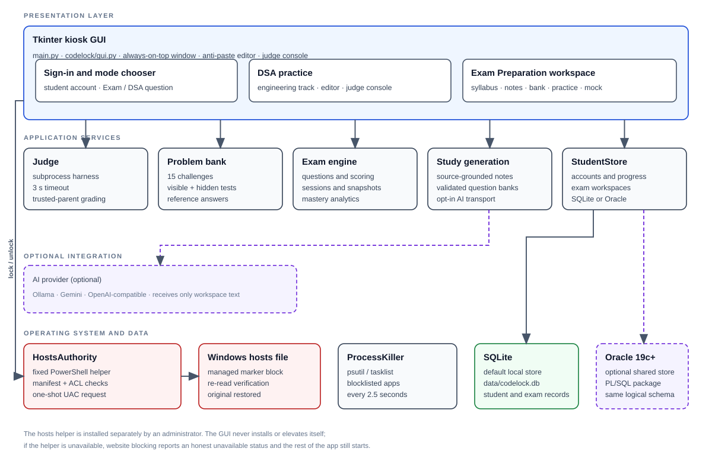
The helper is installed once by an administrator and re-verified on every elevated launch. The GUI never installs it, never executes the project copy and never keeps an elevated process alive.
After sign-in, the chooser is the only path into the application. The Exam branch opens the workspace with track=None, starts no watchdog and applies no lock; closing the exam window exits CodeLock. The DSA branch selects the Engineering track, loads the Addition warm-up, pins the window, starts the watchdog and applies the hosts block. A passing submission still requires confirmation before the reward; declining leaves the machine locked. When the reward expires, the block returns and the next challenge loads.
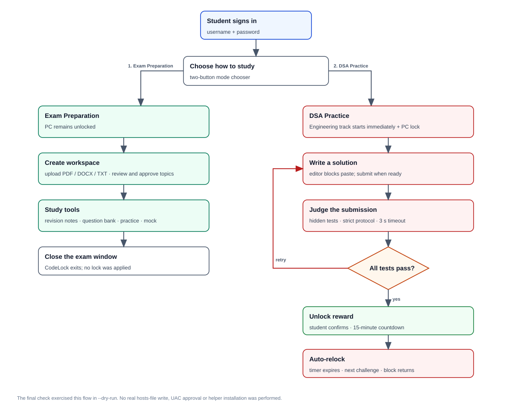
A daemon watchdog sweeps the process blocklist and re-checks the hosts state every 2.5 seconds, posting results to the Tk event queue rather than touching widgets from the thread. The reward countdown uses Tk’s after() scheduler. Submissions run in a separate judge thread so the window remains responsive during the three-second grading limit. Shutdown stops the watchdog, terminates active judge workers, restores the hosts file when a block is active and then destroys the root window.
Accounts are created locally or in the configured Oracle schema. Passwords are hashed with PBKDF2-SHA256 and 200,000 iterations before storage; the database holds the hash and a random salt, never the plaintext. A student can create an account, sign in and resume per-track progress. After sign-in, the mode chooser presents 1. DSA Practice first and 2. Exam Preparation second. In real mode the chooser cannot be closed with its title-bar button; the student must select a mode. DSA Practice selects Engineering, opens the Addition warm-up and starts enforcement. Exam Preparation opens the workspace without a lock and closes CodeLock when its window closes.
The focus mode writes a delimited CodeLock block into the Windows hosts file. On Windows the write is performed by a fixed PowerShell helper installed under %ProgramFiles%\CodeLock. Before requesting UAC, the application verifies the installation directory ACL, the manifest and the helper SHA-256; the helper accepts only block, unblock, status, recover and repair operations, and the blocked domains are compiled into it. The application re-reads the hosts file after every operation and reports BLOCKED, PARTIAL, DAMAGED, NOT BLOCKED or STATUS UNKNOWN. A watchdog terminates Discord, Steam, Spotify, WhatsApp, Telegram, Epic Games Launcher and Discord Canary every 2.5 seconds.
A submission is sent over standard input to a fresh python -I process in a temporary working directory. The parent owns the visible and hidden cases, sends one case at a time and compares the returned, type-tagged value itself. The worker never receives an expected answer, the test list or a hidden/sample flag. Frames use a per-session prefix and a strict order; missing, duplicate, extra, malformed or oversized frames are rejected. A three-second overall limit and a two-second per-case limit bound execution, and the process tree is terminated on timeout. On Windows the worker is assigned to a Job Object with a CPU limit, a 256 MiB process-memory limit and kill-on-close; on POSIX it receives its own process group and resource limits.
Every challenge has visible examples and 24 to 38 generated hidden cases (30 for the Addition warm-up). Cases are seeded for reproducibility and include edge cases such as empty input, duplicates and negative numbers; expected answers come from brute-force reference logic. RUN SAMPLES checks only the visible examples and cannot unlock anything. SUBMIT & UNLOCK PC runs the full set; even a complete pass requires a separate confirmation. Declining the confirmation leaves the PC locked and still records the passing attempt.
An Exam Preparation workspace stores the subject, course level, examination date, total marks and duration. A syllabus can be uploaded as PDF, DOCX or TXT, or entered as a manual outline. PDF text is extracted locally with pypdf; DOCX paragraph and table text uses the standard library. Extraction is bounded to 20 MiB per file, 500 PDF pages and 500,000 characters. The extracted unit/topic tree remains editable until the student approves it. Generated notes and questions are unavailable before approval, and changing an approved syllabus revokes approval and empties the active question bank.
Notes can be generated in very short, standard or detailed styles. Each note keeps its source filename, unit and topic reference and a support status; topics not covered by the supplied source are marked as not specified rather than filled with invented content. The question bank supports multiple choice, true/false, fill-in, one-word, short-answer, long-answer, practical, programming and viva questions. Questions are validated for type, difficulty, Bloom level, answer, explanation, marks, source topic and duplicates before saving. Generated text remains editable, and all rows are scoped to the signed-in student. When no AI provider is configured, the interface shows an error and does not fall back to fabricated material.
Practice builds a topic-wise test from the approved bank: choose one or more topics, a difficulty and a question count. Objective answers are checked immediately with the awarded marks, reference answer and explanation; written answers are stored and flagged for review. Mock examinations add a duration, an optional target score and a countdown that starts when the session opens. Answers can be changed until submission, and the paper submits automatically when time runs out. Each session snapshots its questions, so later edits to the bank cannot alter a paper in progress or already submitted.
The Results tab lists every session with score, accuracy and review count. A finished session opens a per-topic breakdown and a full answer review. Analytics reads only submitted sessions; abandoned or in-progress sessions never affect the figures. A topic needs at least five graded answers before it is classified as critical (below 45%), weak (below 60%), developing (below 75%) or strong (75% and above). A recent drop of 15 points is called out separately. Mastery is Not Started, Needs Improvement, Learning or Mastered (at least 8 graded answers and 80% accuracy with no decline). The range filter covers the last 7 days, the last 30 days or all time and applies to every card, chart, table and recommendation. Written answers awaiting review are excluded from accuracy rather than counted as wrong.
SQLite is created automatically at data/codelock.db. When CODELOCK_ORACLE_DSN is set and the driver connects, the same logical schema is served by Oracle through the codelock_api PL/SQL package. Normalized question and session rows are derived from the approved question JSON by sync_question_bank; the JSON remains the editable source document. Exam migrations are provided for an existing Oracle schema.
The first modification saves hosts.codelock.bak. The helper writes a temporary file in the same directory, flushes it, replaces the hosts file atomically, preserves its encoding and newline style and re-reads the result. Damaged markers can be repaired; --restore removes exact CodeLock markers and managed lines while preserving unrelated entries. If a result cannot be verified, the application reports the observed state and writes a recovery note with the exact command. The emergency exit (Ctrl+Alt+Shift+Q or the on-screen button) restores website access and quits; when an admin password is configured, it is required. The watchdog never opens a UAC prompt on its own.
The sign-in dialog is the first screen. It reports which storage backend is active, so a reviewer can see whether the session is using SQLite or Oracle before creating an account. The mode chooser then presents the two journeys as full-width buttons with a short description, a consequence line and a colour cue: green for Exam Preparation, red for DSA Practice. The chooser is intentionally modal; closing it does not dismiss the application in real mode.
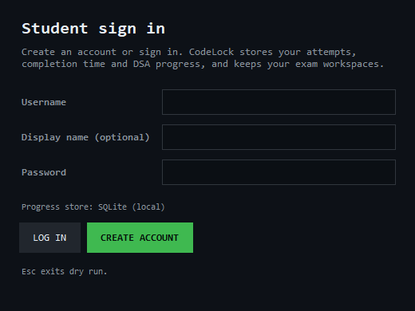
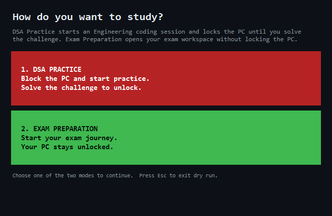
Figure 6.3 shows the workspace after a syllabus has been imported and approved. The header carries the subject, course level, examination date, total marks and duration, while the tabs separate the syllabus, notes, question bank, practice, mock examination, results and analytics. The topic tree on the left is the same structure that gates generation; a topic that is not approved cannot silently become a question.
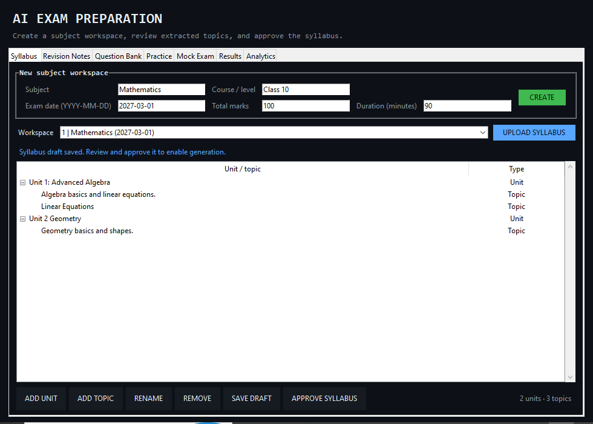
| Tab | What the student can do | Evidence produced |
|---|---|---|
| Syllabus | Upload PDF/DOCX/TXT, edit units and topics, save a draft, approve | Approved topic tree and source text |
| Notes | Generate very short, standard or detailed revision notes | Source filename, topic reference, support status |
| Question Bank | Generate, edit, validate and save nine question types | Normalized rows and a bank fingerprint |
| Practice | Choose topics, difficulty and count; answer with immediate feedback | Scored practice session and per-question review |
| Mock Exam | Choose topics, difficulty, count, duration and target marks | Timed session with a question snapshot |
| Results | Open submitted or in-progress sessions | Score, accuracy, review count and per-topic breakdown |
| Analytics | Filter by 7 days, 30 days or all time | Accuracy, mastery, trends, recommendations |
Generation is gated by approval: before the syllabus is approved, the notes and question actions remain unavailable. Saving an unchanged draft only refreshes the timestamp; changing the syllabus revokes approval and empties the active bank.
Figure 6.4 shows the question bank after generation from an approved syllabus. Each row carries its unit, topic, type, difficulty, Bloom level, marks and source reference, and the bank can still be edited before a session uses it. Figure 6.5 shows a topic-wise practice session: objective answers are scored immediately with the awarded marks, the reference answer and an explanation, while written answers are stored for later review.
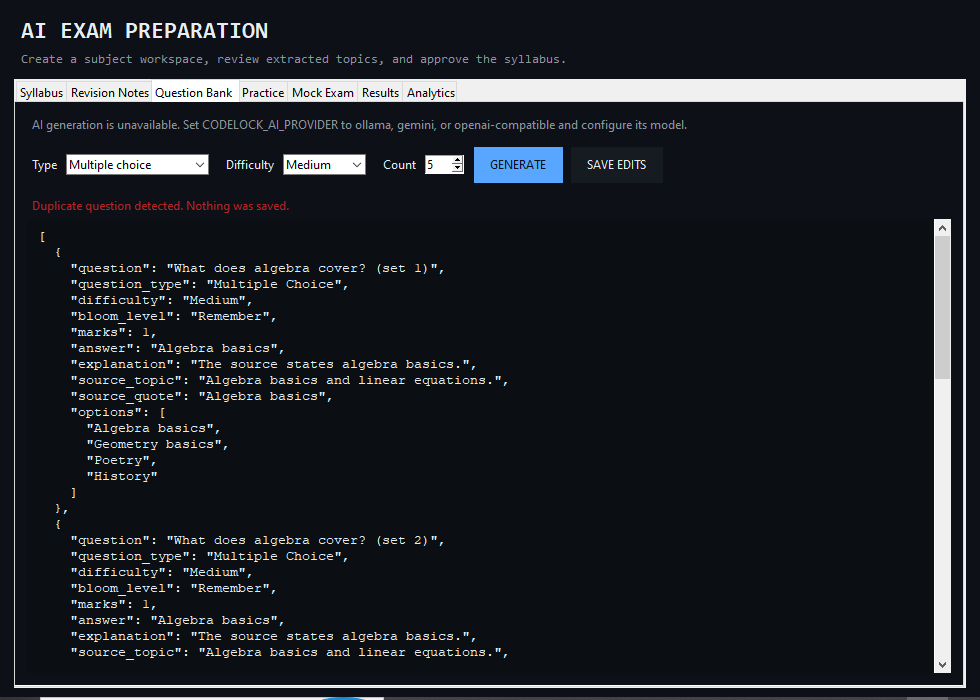
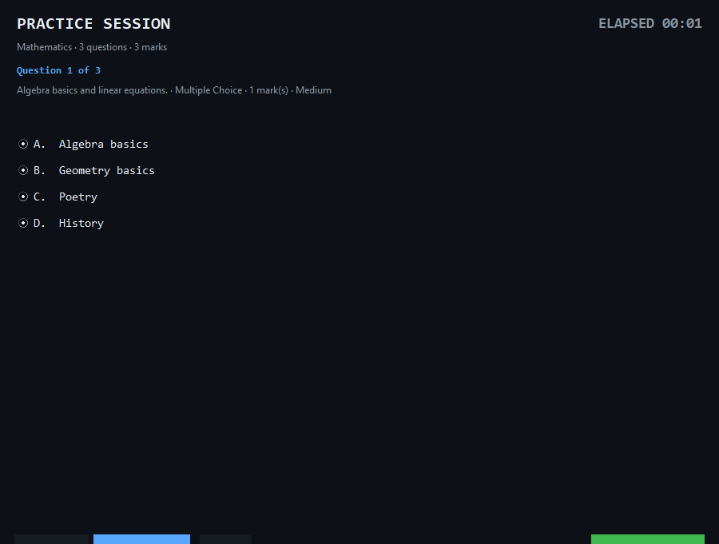
Figure 6.6 shows a submitted mock examination with a per-topic breakdown: questions, correct, incorrect, needs review, unanswered, marks, awarded marks and accuracy. Figure 6.7 shows the analytics dashboard with stat cards, a topic table, a session-trend chart and recommendations. The range selector applies to every element on the tab, so a seven-day view cannot mix in older sessions.
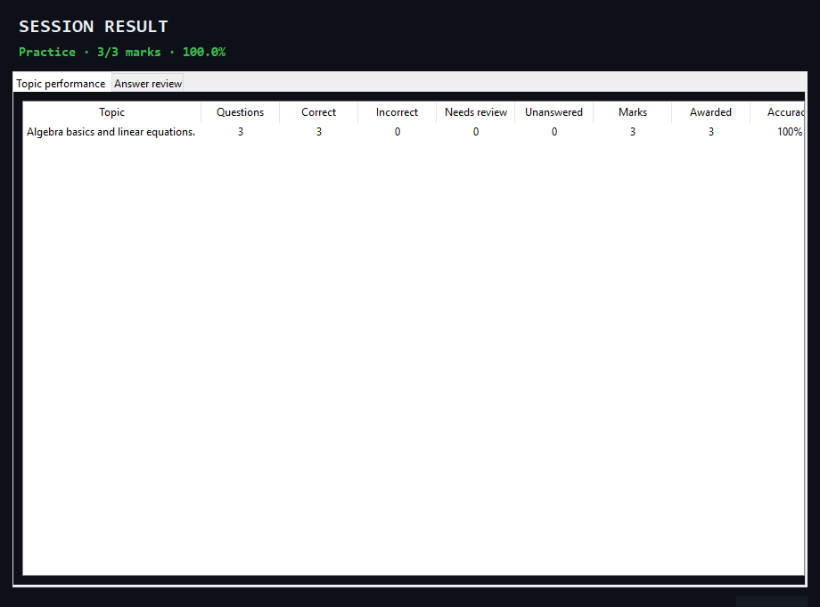
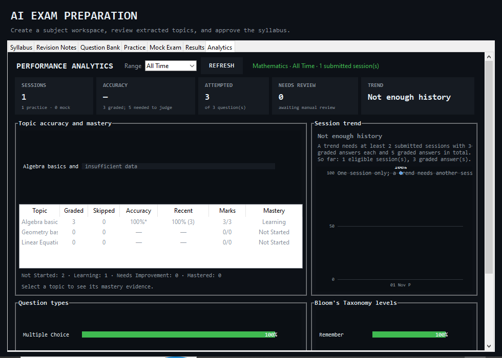
The dashboard deliberately hides overall accuracy and trend results until at least five graded answers exist. A recommendation appears only for a topic classified as Needs Improvement with at least five graded answers; otherwise the topic is listed under evidence needed. This prevents a single lucky or unlucky answer from being presented as a learning diagnosis.
CodeLock uses one logical schema with two physical backends. SQLite is the default and requires no server; Oracle 19c+ is optional and is used when a DSN and credentials are configured. The schema separates account and progress data from exam content, and every exam table carries a student identifier so that a query can enforce ownership rather than filtering in the interface after loading another student’s rows.
| Table | Key columns | Purpose |
|---|---|---|
| students | id, username, display_name, password_hash, salt, created_at, last_login | One row per account; username is unique and normalized |
| progress | student_id, track_key, current_index, completed, attempts, total_seconds, best_seconds | One row per student and track; resumes the saved challenge |
| attempts | id, student_id, track_key, problem_key, duration_seconds, passed, tests_passed, tests_total | One row per graded submission; supports history and best time |
| Table | Key columns | Purpose |
|---|---|---|
| exam_workspaces | workspace_id, student_id, subject, course_level, exam_date, total_marks, duration_minutes, source_text, topics_json, notes_json, questions_json, fingerprint | Workspace metadata and the editable source documents |
| exam_questions | question_id, workspace_id, student_id, unit_title, topic, type, difficulty, bloom_level, prompt, options_json, answer, source_quote | Normalized question bank rows derived from approved JSON |
| exam_sessions | session_id, student_id, workspace_id, mode, status, blueprint_json, total_marks, score_marks, needs_review, duration_limit | Practice or mock session with its configuration and result |
| exam_responses | response_id, session_id, question_id, student_answer, is_correct, awarded_marks, review_status, question_snapshot_json | One row per session question, including the frozen snapshot |
| Aspect | SQLite (default) | Oracle 19c+ (optional) |
|---|---|---|
| Setup | Created automatically at data/codelock.db | Run database/schema.sql and set three environment variables |
| Sharing | Per machine and per user account | Shared across computers through the database |
| Access control | Anyone with file access can read or alter it | Depends on the database account and network |
| Use case | Single-student local use and demonstrations | Several computers that must share accounts and progress |
Figure 7.1 shows the seven tables and their relationships. The students table is the ownership root; progress and attempts are keyed by student and track, while workspaces, questions, sessions and responses fan out from a workspace. Sessions retain their own question snapshots so that editing the bank cannot rewrite history.
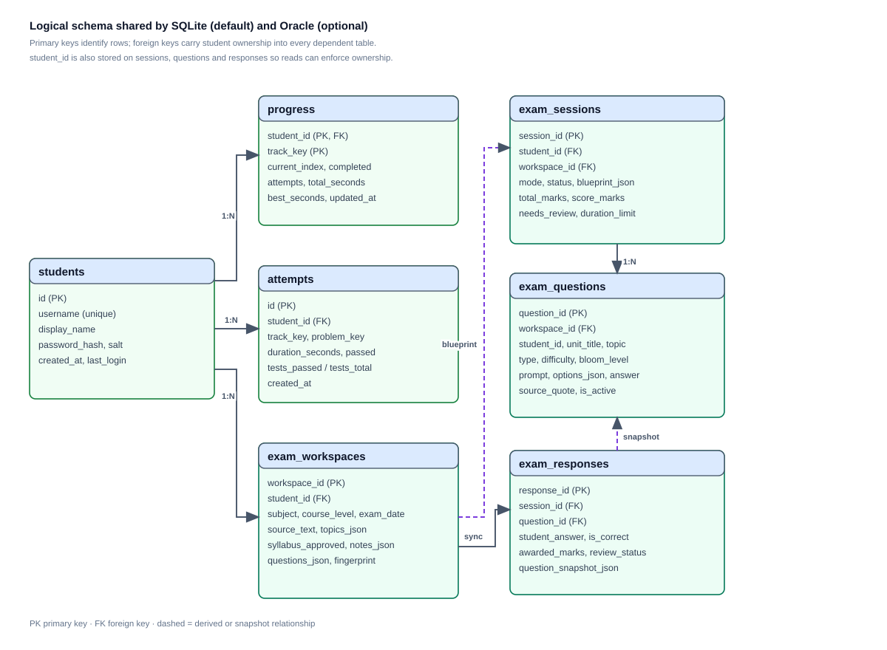
Analytics and result queries filter by both student and workspace, so one account cannot read another student’s history even if it guesses an identifier. Passwords are stored only as PBKDF2-SHA256 hashes with random salts. The SQLite file is not encrypted, and anyone with access to it can read or modify it; the Oracle path is only as secure as the database account and network it is given. AI providers receive only the extracted source excerpts needed for the selected topics, and API keys are read from environment variables rather than written to the database. Remote providers should not be used with confidential syllabus material; the local Ollama option keeps generation on the machine.
Fresh Oracle installations receive the exam tables from database/schema.sql; existing schemas apply migrations 001 and 002 once. SQLite creates its tables on first use. Deleting the SQLite file resets all local accounts and content; changing CODELOCK_DB_PATH or CODELOCK_DATA_DIR selects a different store. There is no automatic retention or purge policy, so a deployment should decide how long student records are kept.
| Feature | Manual willpower | Browser extension | CodeLock |
|---|---|---|---|
| Scope | No enforcement | Browser tabs and sites | Hosts file plus seven desktop processes |
| Unlock condition | None | Timer or a settings toggle | All hidden tests pass and the student confirms |
| Active session | Self-managed | Usually a timer | Challenge-based; reward is 15 minutes |
| Evidence | None | Usage summary | Attempt history, elapsed time, pass/fail and tests passed |
| Privilege | None | Browser permission | One approved helper operation per hosts change |
| Failure mode | Distraction | Disabled extension or a new browser | Reports the observed state; does not claim a block |
| Aspect | Sample-only checker | Online judge | CodeLock judge |
|---|---|---|---|
| Hidden tests | No | Usually | 24 to 38 generated cases per submission |
| Expected answers in the worker | Often present | Server-side | Never; the parent owns and compares them |
| Forged verdict | Possible | Server-side | Rejected by frame order, prefix and type checks |
| Timeout | Varies | Server policy | 3 s overall and 2 s per case; process tree terminated |
| Isolation claim | None | Server sandbox | Separate interpreter and Job Object, explicitly not a sandbox |
| Unlock coupling | None | None | A pass still requires explicit confirmation |
| Feature | Static notes | General chat assistant | CodeLock workspace |
|---|---|---|---|
| Syllabus grounding | Manual | Prompt-dependent | Imported syllabus and approved topic tree |
| Source reference | Sometimes | Rarely | Filename, unit and topic on generated content |
| Question validation | Manual | None | Type, marks, answer, Bloom level and duplicate checks |
| Practice and mock | Separate tools | Ad hoc | Scored sessions with snapshots and auto-submit |
| Analytics | None | None | Accuracy, mastery, trends and evidence-based recommendations |
| Unsupported topics | May be omitted | May be invented | Marked as not specified in the source |
These tables position the implemented feature set against common approaches. They do not rank commercial products, and they do not claim that CodeLock is a replacement for an institutional learning platform or a production online judge.
The following gaps are stated in the project documentation or follow directly from the implemented scope. They are not confirmed defects in unseen code; they identify what a larger deployment would need.
| Observed gap or constraint | Implication | Potential improvement |
|---|---|---|
| Real UAC approval, helper installation and hosts writes were not performed in development | Windows enforcement is demonstrated, not certified | Supervised pilot on a dedicated PC with an administrator present |
| Hosts blocking can be bypassed by DNS-over-HTTPS, a VPN or direct IP access | The block is a commitment device, not a firewall | Add an OS firewall policy as a second layer |
| The judge is not a security sandbox | Hostile code must not be run | Use a VM, AppContainer or Windows Sandbox for untrusted code |
| Enforcement is Windows-first | Linux blocking is limited without a privileged service | Provide a platform-specific privileged service |
| Oracle was verified through schema and fallback inspection, not a live instance | The shared-database path is unproven at runtime | Run a staging Oracle instance and a full integration test |
| No manual marking screen for written answers | Accuracy covers objective answers only | Add a marking workflow and recompute accuracy |
| No AI provider was used in the final check | Generated notes and questions are demonstrated through stubs | Evaluate a configured provider on a real syllabus |
| No password-recovery flow | A forgotten password means a new account or a manual row edit | Add an administrator reset path |
| Analytics are informational, not scheduled | No spaced-repetition plan is produced | Add a revision scheduler driven by mastery data |
| SQLite is local to one machine | Accounts do not sync by default | Pilot the Oracle backend for a shared lab |
The project is evaluated on observable behaviour rather than on feature count. Each criterion below has a corresponding check in the offline suite, the GUI smoke test, the mode flow harness or the dry-run walkthrough.
| Area | Expected result or criterion | Evidence |
|---|---|---|
| Accounts | Create and sign in; reject duplicate usernames and wrong passwords; store hashes only | Self-test |
| Mode chooser | DSA first, Exam second; X blocked; closing Exam exits CodeLock | 23/23 flow harness |
| DSA lock | Apply the block, verify the observed state and report honestly when unavailable | Dry run and simulated backends |
| Judge | All 15 reference solutions pass; wrong, malformed and forged submissions fail | Self-test |
| Hidden tests | 24 to 38 cases per submission; visible samples alone cannot unlock | Self-test and dry run |
| Reward | 15-minute countdown, auto-relock, next challenge loaded, editor reset | Dry run |
| Syllabus import | TXT, DOCX and PDF extraction with the stated size, page and character bounds | Self-test |
| Approval gate | Generation blocked before approval; a changed syllabus revokes approval | Self-test |
| Practice and mock | Immediate objective feedback, timed auto-submit, frozen question snapshots | Self-test and GUI smoke test |
| Analytics | Submitted sessions only; five-answer minimum; 7/30/all-time filters | 13/13 UI smoke test |
| Persistence | Progress resumes after restart; student and workspace isolation | Self-test |
| Build health | py_compile clean; 227/228 self-tests; 13/13 UI; 23/23 flow | Final offline check |
| Command | Result | Scope |
|---|---|---|
| python -m py_compile | Exit 0 | All Python modules |
| python main.py --self-test | 227/227 | Hosts, helper, judge, problems, database, exam, analytics |
| .venv/bin/python.exe main.py --self-test | 228/228 | Adds the two pypdf PDF-extraction checks |
| python main.py --self-test-ui | 13/13 | Analytics tab, filters, recommendation action |
| Mode-chooser flow harness | 23/23 | Temporary database; no privileged operation |
The suite was run on 2026-11-01 and the flow harness on 2026-11-02. The real hosts file was hash-checked before and after and was not modified. A real UAC prompt was not approved, the helper was not installed and no real desktop application was killed.
CodeLock is a compact academic prototype and a commitment device, not a prison or a security product. It stops impulsive tab-switching and app-opening, not a determined user. Anyone with administrator rights can edit the hosts file, replace the helper or uninstall Python. The window is topmost but not a full-screen operating-system kiosk; Alt+Tab still works. Hosts blocking does not stop DNS-over-HTTPS, VPNs or direct IP access, and force-killing CodeLock stops the process watchdog.
The judge runs as the same user in a separate interpreter with resource limits; it is not a security sandbox. Student code can still attempt to read files or automate input, so hostile code must not be run. The real UAC prompt, the %ProgramFiles% installation, writes to the system hosts file and desktop-process termination were not exercised in the development environment; the PowerShell helper was tested against temporary files only. The Oracle backend and a live AI provider were not executed. There is no OCR for scanned PDFs, no manual marking screen, no password recovery and no spaced-repetition scheduler. Analytics accuracy covers auto-graded objective answers only, so a fully marked paper could show a lower figure.
The project demonstrates a complete, locally runnable loop in which a focus contract and a study workspace share one account and one database. It shows a trusted-parent judge that resists forged verdicts and type confusion, a privileged helper that is verified before every elevation, an exam pipeline that keeps generated material tied to an approved syllabus, and an analytics layer that refuses to diagnose a topic from too few answers. It also demonstrates a documentation discipline: the verified results and the unverified boundaries are recorded separately.
CodeLock meets its stated goal: a student can sit down, choose Exam Preparation for measurable study or DSA Practice for a locked coding session, and leave with a record of what was attempted. The two-mode chooser makes the consequence of each choice explicit before any enforcement begins. The project is small enough to inspect, honest about its limits and structured so that the next step, a supervised pilot on a real Windows machine, can be evaluated without changing the core design.
| File or folder | Purpose |
|---|---|
| main.py | Entry point, command-line flags, restore, self-test and UI smoke test |
| codelock/gui.py | Kiosk window, sign-in, mode chooser, watchdog, reward timer |
| codelock/judge.py | Subprocess harness, strict protocol, timeout and worker cleanup |
| codelock/problems.py | Track registry, 15 challenges and hidden-test generators |
| codelock/exam_ui.py; exam_runner.py | Workspace tabs and practice/mock runner windows |
| codelock/exam_engine.py; exam_analytics.py | Question selection, scoring, mastery and trends |
| codelock/db.py | Accounts, progress, exam rows, SQLite and Oracle backends |
| codelock/hosts_helper.ps1; hosts_elevation.py | Fixed elevated helper and one-shot verification/UAC client |
| codelock/selftest.py; ui_smoke.py | Offline verification and temporary-database GUI smoke test |
| database/schema.sql; database/migrations/ | Oracle student and exam schema, view and PL/SQL package |
| tools/install_hosts_helper.ps1 | Administrator installer, manifest writer and ACL setup |
The complete source folder, this report and the documentation files are submitted together. Section 13 records the source inventory and the verified backup snapshot. The project does not include a public repository URL because none was configured at the time of writing.
No public GitHub repository has been configured for CodeLock at the time of writing. The repository field is therefore left without a URL rather than populated with a link that does not resolve. The equivalent proof is the submitted project folder itself, a verified backup snapshot and the offline verification record below. A reviewer can reproduce the checks from the folder without network access.
| Evidence item | What it contains | Result |
|---|---|---|
| Submitted folder and backup | Source, 19 modules, helper, schema, documentation and a dated snapshot; SHA-256 manifest of every file | 46/46 verified |
| Offline self-test | Hosts, helper, judge, problems, database, exam and analytics checks | 227/227 and 228/228 |
| UI smoke test | Analytics tab, range filters and recommendation action | 13/13 |
| Mode flow harness | Exam and DSA paths in a temporary database | 23/23 |
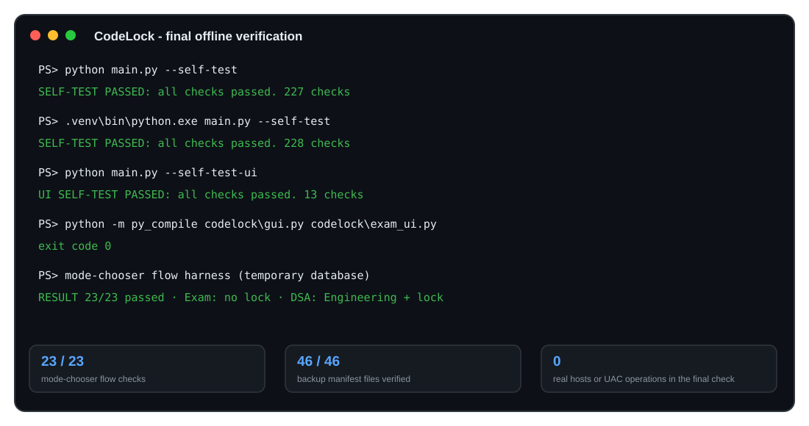
| File | Lines | Role |
|---|---|---|
| main.py | 207 | Entry point and command-line operations |
| codelock/gui.py | 1,878 | Kiosk window, sign-in, mode chooser, watchdog |
| codelock/exam_ui.py | 1,736 | Seven-tab exam workspace |
| codelock/db.py | 1,796 | Accounts, progress, exam rows and both backends |
| codelock/selftest.py | 2,922 | Offline verification suite |
| codelock/judge.py, problems.py | 1,806 | Grading protocol, challenge bank and hidden tests |
| codelock/hosts_elevation.py, hosts_helper.ps1 | 1,937 | Helper verification, UAC client, recovery and the fixed helper |
| Other modules and SQL | 4,288 | Exam, analytics, charts, AI, installer and schema |